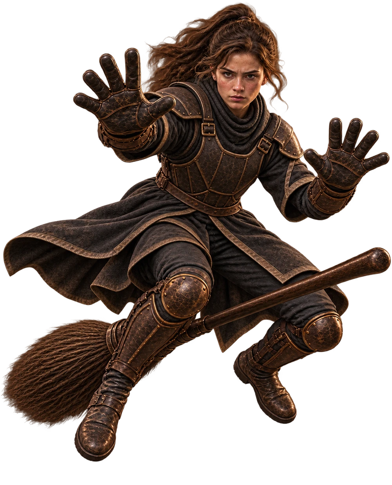

Školní pozemky
Famfrpálové hřiště
Nad prázdným hřištěm se v pohybu drží camrál a občas se mihne i zlatonka.
Zkouška brankáře
20 střel · klikni na obruč a přesuň brankáře
20 střel · klikni na obruč a přesuň brankáře
Školní pozemky
Nad prázdným hřištěm se v pohybu drží camrál a občas se mihne i zlatonka.
Famfrpálové hřiště
Camrál letí k jedné ze tří obručí. Klikni na obruč, kam se má brankář přesunout.

Připrav se.